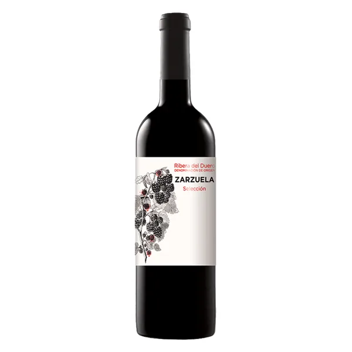
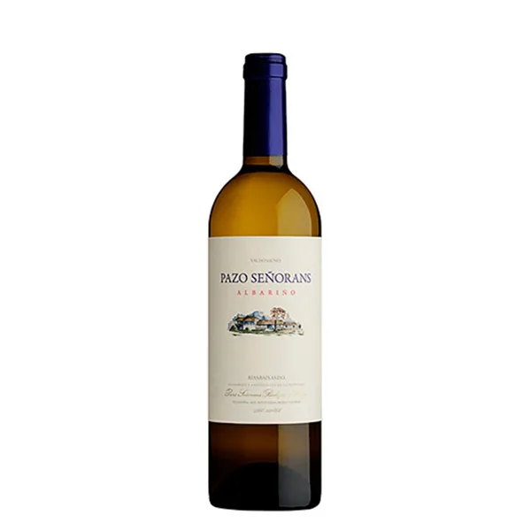
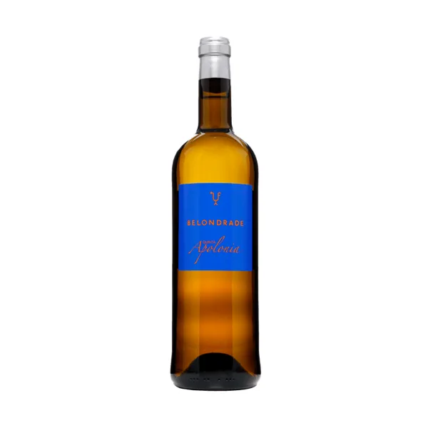
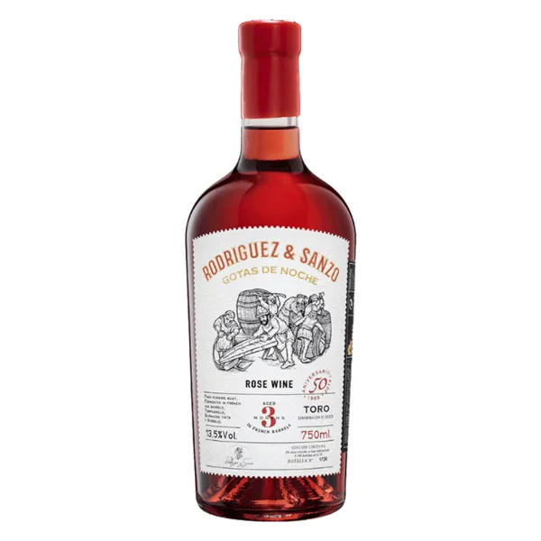
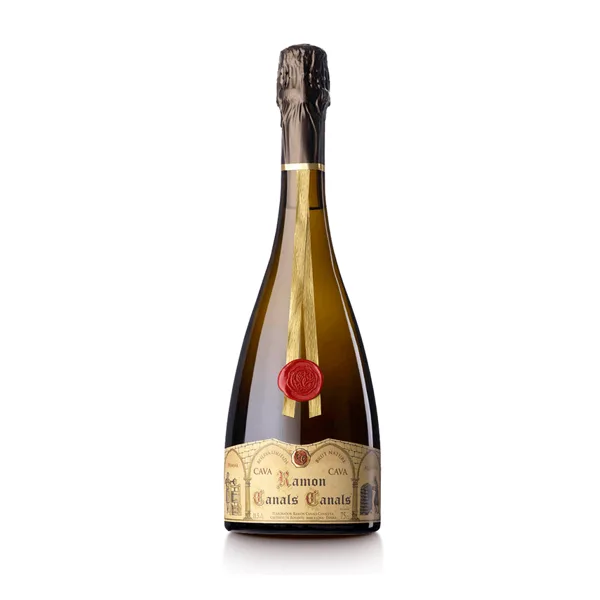
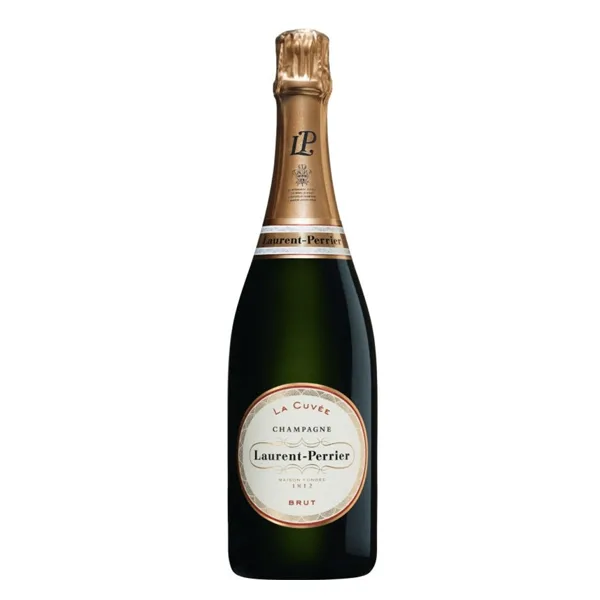
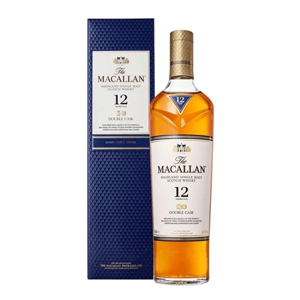
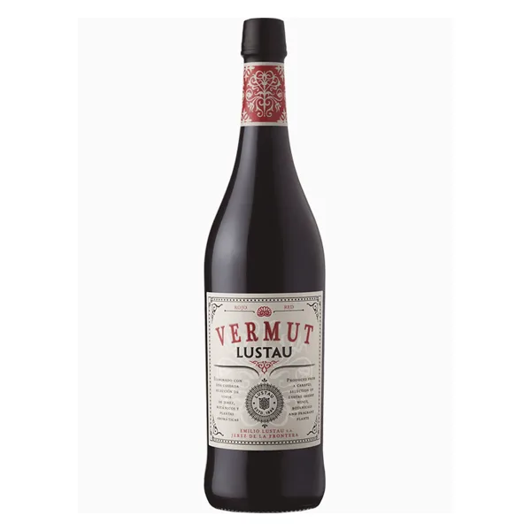

Un cliente entra en la tienda y pregunta «¿qué vino llevo para un arroz con bogavante?». Salva le contesta como lo haría alguien de la vinoteca: le pregunta lo justo (para qué es y cuánto quiere gastar) y le recomienda botellas de vuestro catálogo, con su precio, su ficha y el porqué. También atiende regalos, envíos, pedidos, catas, peticiones de hostelería y lo que no está en la web.
Pulsad una pregunta y Salva la contesta en el chat. Los productos, precios y condiciones son los vuestros; los pedidos son de ejemplo.
Recomienda dos o tres botellas que están en stock y entran en su presupuesto, y le dice por qué encajan con el plato según vuestra ficha.
Pregunta lo que falta y propone botellas con algo especial dentro del presupuesto.
En la vinoteca tenéis más de 3.100 referencias. Si no está online, no dice que no lo tenéis: manda a preguntar a la tienda y toma nota.
Recoge cuántos son, qué fecha les viene bien y un teléfono, para que vuestro equipo llame y la cierre.
Lo pasa a Distribución Aguilar con el nombre del negocio y su teléfono. No da precios de la web a un profesional.
Pide el número y cuenta en qué punto está con TIPSA. Si el barco a Baleares se retrasa, el cliente ya lo sabe porque Salva le avisó.
Vuestras zonas de envío y la hora de corte de las 17:00, tal y como están publicadas.
Pide el número de pedido y una foto, recuerda lo del albarán y lo pasa a vuestro equipo. No promete reembolsos.
Ejemplo con un pedido de la muestra.
Retrasos de la agencia, pagos recibidos y pedidos que salen: el cliente se entera por vosotros y no tiene que preguntar. En esta muestra el mensaje es de ejemplo y no se envía a nadie.
Datos de vuestra web. Cada tarjeta abre la ficha en aguilarbodega.es.








Los datos son vuestros, leídos de aguilarbodega.es el 26 de octubre de 2026: los 281 productos de la tienda online con precio, disponibilidad y lo que cuenta cada ficha (zona, uva, crianza, notas de cata), vuestras condiciones de envío, plazos, pago, devoluciones y factura, y los datos de la vinoteca de Ondara y de la destilería de Pedreguer.